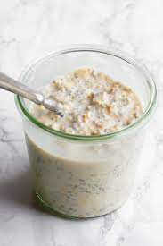

Protein Overnight Oats

Protein overnight oats is one of the easiest ways to to get your macros in without cooking.
This recipe requires little to no effort for a breakfast that will keep you fueled throughout the morning!
Ingredients
- 30 grams (1/3 cup) rolled oats
- 1 servings of your choice of protein powder (we will be using 1 scoop/33grams of choclate whey protein for the macros)
- 80 grams (1/3 cup) nonfat greek yogurt
- 240 ml (1 cup) of fairlife 2% milk
- pinch of salt
- 1 tablespoon of honey
Ingredients
- In a medium bowl, combine oats, protein powder, honey, and pinch of salt. Mix in the greek yogurt and milk until all ingredients are combined.
- Transfer into a mason jar/container and let it rest in the fridge overnight or for a maximum of 5 days.
Macros
Carbs: 53 grams
Protein: 57 grams
Fat: 8 grams
Calories: 490